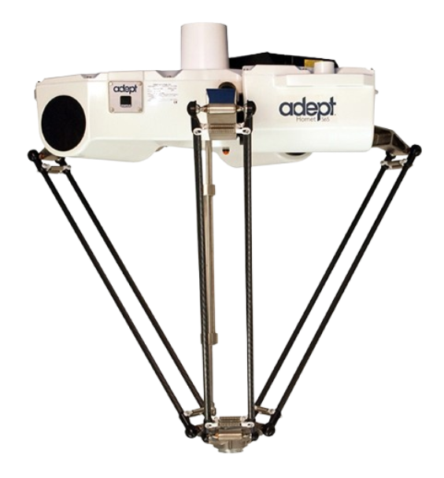

Robô industrial • alta velocidade
Robô com estrutura paralela, conhecido por sua alta velocidade e precisão em tarefas leves.

Os robôs do tipo Delta utilizam uma estrutura de braços paralelos conectados a uma base fixa. São projetados para realizar movimentos rápidos e precisos, principalmente em aplicações de pick and place.
O robô é composto por três braços conectados a motores fixos na base. Esses braços trabalham de forma sincronizada para movimentar o efetuador final, permitindo movimentos rápidos e suaves.
Muito utilizado nas indústrias alimentícia, farmacêutica e eletrônica, principalmente em tarefas de separação, embalagem e montagem rápida.
Integração com sistemas de visão e sensores permite coleta de dados em tempo real, otimizando processos produtivos.